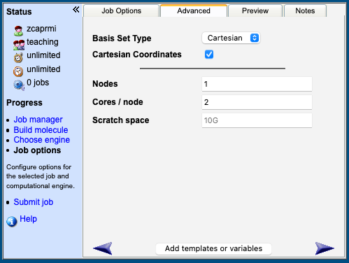
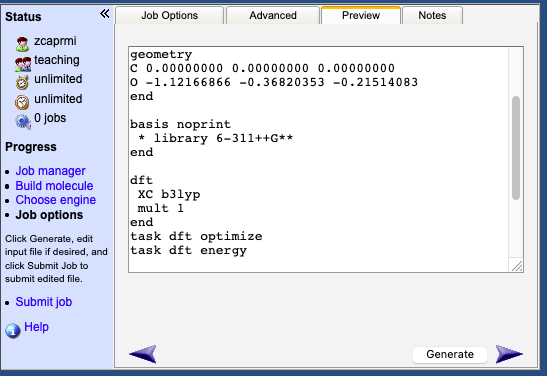

Molecular Quantum Chemistry Practical 3 CHEM0025 2021
Prof Ben Slater (b.slater@ucl.ac.uk), Prof Graham Worth (g.a.worth@ucl.ac.uk), Dr Miguel Rivera (miguel.rivera@ucl.ac.uk)
Introduction
Background
In this module you will learn how to use quantum chemistry computer software to get insight into the reactions of simple molecules. You will mainly use density functional theory (DFT) in your work, now the most commonly used quantum mechanical approach for routine modelling of isolated molecules, liquids and crystals. It is not important to understand the detailed mathematics behind the theory of DFT, but you should familiarise yourself with the basic tenets of this approach – students who have opted to do CHEM0028 will have already encountered DFT and key parts of the course are on the Moodle page. Suggested reading is given at the end of lab book.
In this module you will:
- Setup and run calculations in the UNIX computing environment Learn how to
- calculate properties of molecules, such as reaction enthalpies and barriers from simulations
- Use a visualiser to help interpret the output from the calculations Write up
- your computational research in a report
Assessment
The module will be assessed by two written reports worth 50% each, [CONSULT WITH BEN AND GRAHAM]
Please write a word processed report giving answers to the questions given at the end of this document. Give the total energies for each of the structures in your calculations and the associated filename. Please present your data in a clear manner giving appropriate labels and units. In many cases, quoting the relative energy is more instructive than the absolute energies, so present that where it is meaningful. The computer you will be using for your calculations is not backed up. I advise copying your important input and output data to your account under Desktop@UCL and/or backing up your data on your home computer. The latter can be done using ‘sftp’ – please speak to me if you want to know how to do this.
Assistance
Do try and solve the problem yourself first. If your problem is about WebMO, the answer may be in the (documentation)[https://webmo.chem.ucl.ac.uk/~webmo//help/Contents.html]. If you are stuck, ask for help on Moodle, or from one of the instructors by email at b.slater@ucl.ac.uk, g.a.worth@ucl.ac.uk or miguel.rivera@ucl.ac.uk.
Getting Started
Programs
You will be using a “UNIX” (unix is a ubiquitous computer operating system) based computer called NTC (New Teaching Cluster) to carry out your calculations, which you can use with Desktop@UCL or with the UCL VPN on your home machine. Once you have set up your account, you will use several pieces of software to actually run calculations:
- WebMO to build molecules, generate input and analyse output for…
- NWChem (https://nwchemgit.github.io/Home.html). This manual is vast and 95% of it is irrelevant for this module, but it may be useful to consult if you are unsure about input commands.
How To Access
- Start your VPN or log in to Desktop@UCL.
- Open an internet browser (Firefox, Chrome, Edge, etc.).
- Visit https://webmo.chem.ucl.ac.uk [DO THEY HAVE A LOGIN?].
- Log in with your UCL username and your NTC password (which could be different from. your main UCL one!).
You should be in.
Launching and Analysing Calculations
Building a Molecule
As a first example, we will study carbon monoxide using WebMO.
- In the top bar, click New Job → Create New Job within WebMO. A blank screen appears in which you can build molecules. When you make mistakes on this page, the left hand bar has an undo button to help ().
- Click in the blank screen and by default a single carbon atom appears.
- To add an oxygen atom, click on the periodic table on the left bar () and select Oxygen.
- Click on the carbon atom and drag where you want the oxygen to appear. A stick will be connecting them to represent the bond. Repeat this step to change the bond to a double, and finally a triple bond. Otherwise, after step 3, you may click instead of dragging, for a non-bonded atom.
- To check the separation between the atoms, first click on the adjust tool in the left bar (
 ).
).
- Click on the Carbon atom, then the Oxygen atom. A sphere should appear around each of them.
- Cleanup your structuree with the cleanup tool in the left bar (
 ). This will add any hydrogens missing from our structure using VSPER theory. Note: this is not yet DFT.
). This will add any hydrogens missing from our structure using VSPER theory. Note: this is not yet DFT.
- Because the electronic structure of carbon monoxide is not straight-forward, WebMO has added a hydrogen. To remove it, use the adjust tool to select it () and press the “backspace” key to delete it.
- We wish to further adjust the C-O bond length. In the top bar, click Adjust → Bond length, and type in 1.2 (the units are in Angstroms, i.e. \(10^{10}\) m), then click “OK”.
The molecule looks ready for calculation.
Setting Up the Calculation
- Click on the right arrow in the bottom right ().
- You will be faced with a menu to choose which engine you want to use to calculate your properties. It should look like this:
- Click on the righ arrow again.
- You should be faced with the Job Options menu. Change the Job Name to something meaningful like your_name_CO. Change the Calculation to Geometry Optimization, the Theory to DFT, the DFT Functional to B3LYP, and the Basis Set to 6-311++G(d,p). It should look like this:
- Click on the Advanced tab, and tick the Cartesian Coordinates box. It should look like this:

- Click on the Preview tab and click on Generate at the bottom of the page, to look at the generated input file. This contains all of the relevant information that you have picked up to now, from the atomic positions to the basis set (details in the next section). You can edit and ovewrite options here, it is the final step before sending it to the program:

- Click on the right arrow again. You will be asked whether you want to submit the input file. Press “OK”
You have now asked the computer cluster to optimise the geometry of the CO molecule.
The input file can be a little cryptic, here is a partial explanation:

You may have to tinker with this later.